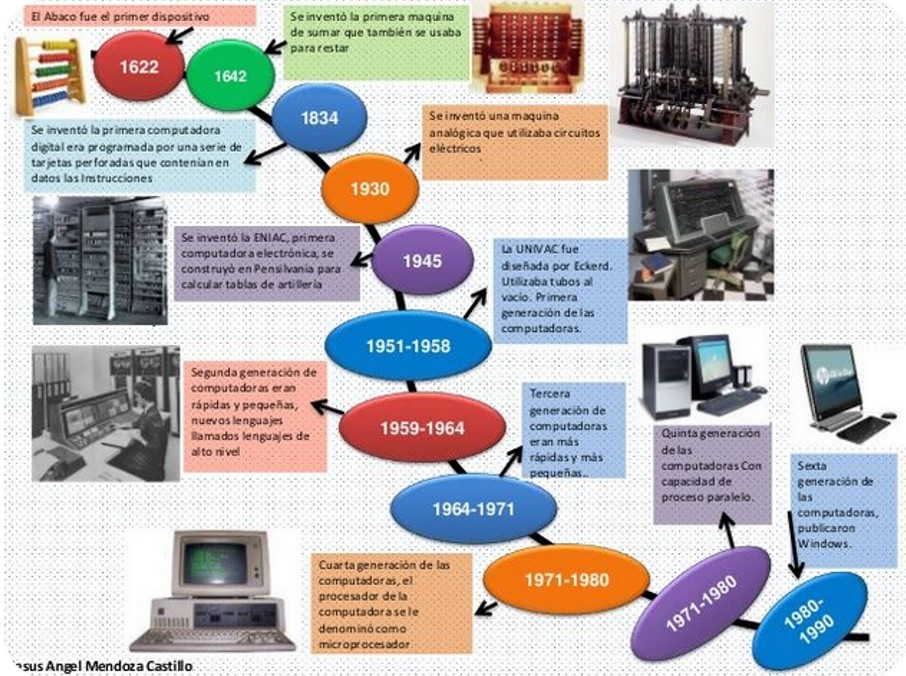

Visā cilvēces vēsturē tuvākā lieta datoram bija abacus, kas faktiski tika uzskatīts par kalkulatoru, jo tam bija nepieciešams cilvēka operators. Datori, no otras puses, automātiski veic aprēķinus, izpildot virkni iebūvētās komandas, ko sauc par programmatūru.
20. gs. Tehnoloģija atviegloja arvien pieaugošās skaitļošanas mašīnas mūsdienās. Bet pat pirms mikroprocesoru un superdatoru parādīšanās bija zināmi ievērojami zinātnieki un izgudrotāji, kas palīdzēja likt pamatu tehnoloģijai, kas kopš tā laika krasi pārveidoja mūsu dzīvi.
Universālā valoda , kurā datori veic procesora instrukcijas, kas radās 17. gadsimtā binārās skaitliskās sistēmas formā. Izstrādāts vācu filosofs un matemātiķis Gottfrīds Vilhelms Leibnica, sistēma parādījās kā veids, kā pārstāvēt decimālskaitļus, izmantojot tikai divus ciparus, skaitli nulli un numur viens. Viņa sistēmu daļēji iedvesmojuši filozofiskie skaidrojumi klasiskajā ķīniešu valodā "I Ching", kas saprata Visumu divvalodās, piemēram, gaismā un tumsā, kā arī vīriešiem un sievietēm. Kamēr tajā laikā nebija praktiskas izmantošanas viņa nesen kodificētajai sistēmai, Leibnica uzskatīja, ka mašīna kādu laiku varēja izmantot šīs garās dinitāro skaitļu virknes.
